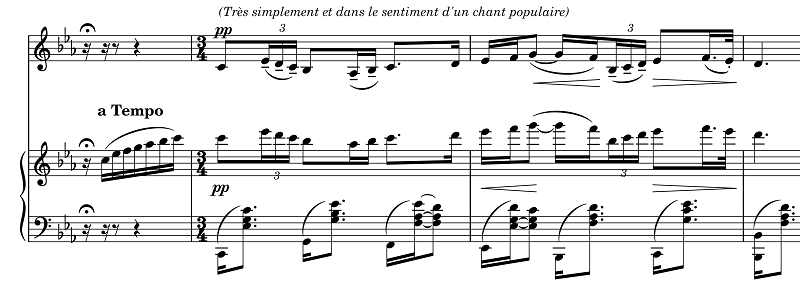

ルクー: ヴァイオリンソナタ
イザイに献呈されたソナタの中でも随一の名作であり、ある種の中毒性を持つ曲である。グリュミオーなどやや古めかしくなった録音が思い出される中で、ごく最近出されたこのベルギーの演奏家二人による演奏は非常に満足のいくものであった。ヴァイオリンは、良く制御されたヴィブラートで適度な粘りと高潔さの両方があり、ピアノは低音も魅力的な音で十分響いて、音量バランスを崩さないギリギリの所までヴァイオリンと対等に、優れた表現力を発揮している。
Guillaume Lekeu:
Violin Sonata in G Major
Sylvia Huang (vn)
Eliane Reyes (pf)
(2020-21)
第2楽章、憂愁の感情に支配された7/8拍子の主部の後、しばらくしてピアノに出てくる3/4拍子の慰めの唄（「とてもシンプルに～」の指示がある旋律）に対し、2回目（下記譜例）にはヴァイオリンが同じ節を、ピアノの慰めに同調して昔の記憶から蘇らせるようにG線で口ずさみ始め、メランコリーの出口に導かれるかの如くである。このときピアノは高音部に移り一層透明になってそれを支える。ここでヴァイオリンが過度に目立って歌いすぎては興ざめだし、ピアノの旋律線は控え目であってもしっかり聴こえなくては支えにならない。この演奏は絶妙な音色とバランスでそういう小さなドラマをうまく聴かせてくれていると思う。

なお、作曲者の自筆稿にあたりできるだけそれに則って演奏したとのことで、この3/4の部分の1回目にはほとんど聴こえない程のヴァイオリンのピチカートによる伴奏が加えられている。その他、終楽章のコーダにも印刷譜にはない（だめ押し的な）4小節の盛り上げが付加されている。
ちなみにルクーのソナタは、ブリュッセルの「20人会」(Les XX)で1893年にイザイによって初演されているが、この20人会というのは元々ベルギーの画家などが発起人になって1883年に発足した芸術サークルであり、途中から美術展示会だけでなく音楽の演奏会も行うようになった。テーマとは別の曲の話になるが、フランクのヴァイオリンソナタもこの20人会との関係(?)で1886年にブリュッセルで公開初演されている。その際、陽が傾いてきて譜面が読めなくなった後も会場が美術館であったため灯具が一切使えず、イザイとMarie-Léontine Bordes-Pène（ボルド＝ペーヌ）は記憶を頼りに2楽章以降を最後まで演奏したと伝わっている。
(Apr. 1, 2023)